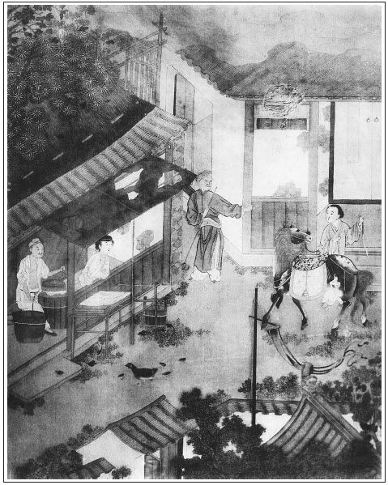

張回此回特寫愛月，卻特與桂姐相映，見此時有月無花，一片寒冷天氣也。始鄭鴇出迎，何異李鴇；愛香出迎，何異李桂卿。伯爵幫襯，不減昔日李家之伯爵；此日之架兒，猶是昔日之踢行頭者，蓋寫一月姐，又特特與桂姐相犯也。
桂姐後有瓶兒之約，月姐後有林氏之歡，又遙遙相映。
王姑子與薛姑子一嚷，則上文印經、遺囑、唸經、月娘與金蓮前後吃符藥，一總結住，下抽筆單寫金蓮，為壬子日相爭之線也。然則二尼，又起釁之由歟！
前後回內，凡寫黃、安諸人來拜，必用西門赴席時夾寫。蓋諸人來拜，無非襯西門之熱，即幾回內煩擺酒，亦無非襯西門之趨奉，非意在諸人也。意不在之人，而必寫之，見用為襯疊花樣之人，故不妨夾寫，然必夾寫，乃能襯出也。
桂姐文中，踢行頭何等熱鬧。架兒等人，此回卻用一喝即散，蓋月兒此回過線，下文即拿聶越兒等人也。
月兒與銀姐合夥，而伯爵一戲，即用葵軒數語點明一部內寫諸娼妓之故，蓋辱西門慶、月娘與娼妓、鴇兒、忘八，皆聲應氣求也。
伯爵戲銜玉臂，與出洞一戲，遙遙相映，卻自是兩樣心事。桂姐愈見其疏，月兒愈見其密也。
桂姐家必著丫頭看西門出院，恐往吳銀兒家去，月兒亦必叫鄭春送西門到家，兩兩遙對。益信此文與桂姐相犯，蓋月姐亦恐到銀兒家也。
桂姐為月娘之女，月下桂也。今月兒奪桂兒之寵，引林氏之媒，明言桂已飄零，月非秋月。蓋雪後之明蟾，獨照空林，大是淒切之情。
玳安兒，蝶使也。於蝴蝶巷一映出，於此處訪蜂媒，又一映出也。
詞曰：
鍾情太甚，到老也無休歇。月露煙雲都是態，況與玉人明說。軟語叮嚀，柔情婉戀，熔盡肝腸鐵。岐亭把盞，水流花謝時節。
──右調《翠雲吟半》

話說西門慶與李瓶兒燒紙畢，歸潘金蓮房中歇了一夜。到次日，先是應伯爵家送喜面來。落後黃四領他小舅子孫文相，宰了一口豬、一罈酒、兩隻燒鵝、四隻燒雞、兩盒果子來與西門慶磕頭。西門慶再三不受，黃四打旋磨兒跪著說：「蒙老爹活命之恩，舉家感激不淺。無甚孝順，些微薄禮，與老爹賞人，如何不受！」推阻了半日，西門慶止受豬酒：「留下送你錢老爹罷。」黃四道：「既是如此，難為小人一點窮心，無處所盡。」只得把羹果抬回去。又請問：「老爹幾時閒暇？小人問了應二叔，裡邊請老爹坐坐。」張夾一回正意為此。西門慶道：「你休聽他哄你哩！又費煩你，不如不央我了。」那黃四和他小舅子千恩萬謝出門去了。
到十一月初一日，西門慶往衙門中回來，又往李知縣衙內吃酒去，月娘獨自一人，素妝打扮，張夾細。坐轎子往喬大戶家與長姐做生日，都不在家。到後晌，有庵裡薛姑子，聽見月娘許下他初五日唸經拜《血盆懺》，於是悄悄瞞著王姑子，買了兩盒禮物來見月娘。月娘不在家，李嬌兒、孟玉樓留他喫茶，說：「大姐姐往喬親家做生日去了。你須等他來，他還和你說話哩。」那薛姑子就坐住了。潘金蓮思想著玉簫告他說，張夾必用玉蕭。月娘吃了他的符水藥才坐了胎氣，又見西門慶把奶子要了，恐怕一時奶子養出孩子來，攙奪了他寵愛。張夾是瓶兒後身。於是把薛姑子讓到前邊他房裡，悄悄央薛姑子，與他一兩銀子，替他配坐胎氣符藥，不在話下。
到晚夕，等的月娘回家，留他住了一夜。次日，問西門慶討了五兩銀子經錢寫法與他。這薛姑子就瞞著王姑子、大師父，張夾賊禿。到初五日早請了八眾女僧，在花園卷棚內建立道場，諷誦《華嚴》、《金剛》經咒，禮拜《血盆》寶懺。晚夕設放焰口施食。那日請了吳大妗子、花大嫂並官客吳大舅、應伯爵、溫秀才吃齋。尼僧也不動響器，只敲木魚，擊手馨，唸經而已。
那日伯爵領了黃四家人，具帖初七日在院中鄭愛月兒家置酒請西門慶。西門慶看了帖兒，笑道：「我初七日不得閒，張西村家吃生日酒。倒是明日空閒。」繡眉大老官口氣皆然。問還有誰，伯爵道：「再沒人。只請了我與李三相陪哥，又叫了四個女兒唱《西廂記》。」西門慶吩咐與黃四家人齋吃了，打發回去，改了初六。伯爵便問：「黃四那日買了分甚麼禮來謝你？」西門慶如此這般：「我不受他的，再三磕頭禮拜，我只受了豬酒。添了兩疋白鷴紵絲、兩疋京緞、五十兩銀子，謝了龍野錢公了。」伯爵道：「哥，你不接錢儘夠了，這個是他落得的。少說四疋尺頭值三十兩銀子，那二十兩，那裡尋這分上去？便益了他，救了他父子二人性命！」當日坐至晚夕方散。西門慶向伯爵說：「你明日還到這邊。」伯爵說：「我知道。」作別去了。八眾尼僧直亂到一更多，方才道場圓滿，焚燒箱庫散了。
至次日，西門慶早往衙門中去了。且說王姑子打聽得知，大清早晨走來，說薛姑子攬了經去，要經錢。張夾妙甚，明點月娘之愚。月娘怪他道：「你怎的昨日不來？他說你往王皇親家做生日去了。」王姑子道：「這個就是薛家老淫婦的鬼。張夾是多心經。他對著我說咱家挪了日子，張夾是誑語戒。到初六唸經。難道經錢他都拿的去了，一些兒不留下？」月娘道：「還等到這咱哩？未曾唸經，經錢寫法就都找與他了。早是我還與你留下一疋襯錢布在此。」教小玉連忙擺了些昨日剩下的齋食與他吃了，把與他一疋藍布。這王姑子口裡喃喃吶吶罵道：「這老淫婦，他印造經，賺了六娘許多銀子。原說這個經兒，咱兩個使，你又獨自掉攬的去了。」繡眉如此功德，能免罪過足矣。三姑六婆處心設慮，大抵如是。讀此可作有家冰鑒。張夾寫惡尼正隱刺月娘。月娘道：「老薛說你接了六娘《血盆經》五兩銀子，你怎的不替他念？」張夾寫月娘深心，可恨。王姑子道：「他老人家五七時，我在家請了四位師父，念了半個月哩。」月娘道：「你念了，怎的掛口兒不對我題？你就對我說，我還送些襯施兒與你。」那王姑子便一聲兒不言語，訕訕的坐了一回，繡眉道著心病，便開口不得，畢竟佛門弟子，良心不昧。往薛姑子家嚷去了。張夾觀此知月娘非真好佛。乃明知其假而資為燒香安胎諸奸計請教他耳。婦人中真有此等權詐奸險者。正是：
佛會僧尼是一家，法輪常轉度龍華。
此物只好圖生育，枉使金刀剪落花。
卻說西門慶從衙門中回來，吃了飯，應伯爵又早到了。盔的新緞帽，沉香色𧜽褶，粉底皂靴，繡眉伯爵來往太熟，從此忽又妝點一番，便見運筆不死。張夾襯出黃四之謝。向西門慶聲喏，說：「這天也有晌午，好去了。他那裡使人邀了好幾遍了。」西門慶道：「咱今邀葵軒同走走去。」使王經：「往對過請你溫師父來。」王經去不多時，回說：「溫師父不在家，望朋友去了。」張旁冷已極矣。張夾此為明伏之筆。伯爵便說：「咱等不的他。秀才家有要沒緊望朋友，知多咱來？倒沒的誤了勾當。」西門慶吩咐琴童：「備黃馬與應二爹騎。」伯爵道：「我不騎。你依我：省的搖鈴打鼓，張夾為下作地。我先走一步兒，你坐轎子慢慢來就是了。」西門慶道：「你說的是，你先行罷。」那伯爵舉手先走了。
西門慶吩咐玳安、琴童、四個排軍，收拾下暖轎跟隨。才待出門，忽平安兒慌慌張張從外拿著雙帖兒來報，說：「工部安老爹來拜。張夾此等章法，又屢屢然矣。先差了個吏送帖兒，後邊轎子便來也。」慌的西門慶吩咐家中廚下備飯，使來興兒買攢盤點心伺候。良久，安郎中來到，西門慶冠冕出迎。安郎中穿著妝花雲鷺補子員領，起花萌金帶，進門拜畢，分賓主坐定，左右拿茶上來。茶罷，敘其間闊之情。西門慶道：「老先生榮擢，失賀，心甚缺然。前日蒙賜華扎厚儀，生正值喪事，匆匆未及奉候起居為歉。」安郎中道：「學生有失弔問，罪！罪！生到京也曾道達雲峰，未知可有禮到否？」張夾文字如曲制盤中。西門慶道：「正是，又承翟親家遠勞致賻。」繡眉問答似閒，然情理鑿鑿，非俗筆可辦。安郎中道：「四泉一定今歲恭喜。」張夾又為引見作線。西門慶道：「在下才微任小，豈敢非望。」又說：「老先生榮擢美差，足展雄才。治河之功，天下所仰。」安郎中道：「蒙四泉過譽。一介寒儒，辱蔡老先生抬舉，張夾嘖嘖於口。謬典水利，修理河道，當此民窮財盡之時。前者皇船載運花石，毀閘折壩，所過倒懸，公私困弊之極。張夾繳黃太尉。又兼賊盜梗阻，張夾又入一百回。雖有神輸鬼役之才，亦無如之何矣。」張夾此等情節，誤國之吏何嘗不知，但以此為口頭怨望之資，自己撇清歸罪於上耳。可恨，可恨。西門慶道：「老先生大才展佈，不日就緒，必大升擢矣。」因問：「老先生敕書上有期限否？」安郎中道：「三年欽限。河工完畢，聖上還要差官來祭謝河神。」說話中間，西門慶令放桌兒，安郎中道：「學生實說，還要往黃泰宇那裡拜拜去。」西門慶道：「既如此，少坐片時，教從者吃些點心。」不一時，就是春盛案酒，一色十六碗下飯，金鐘暖酒斟來，下人俱有攢盤點心酒肉。安郎中席間只吃了三鐘，就告辭起身，說：「學生容日再來請教。」西門慶款留不住，送至大門首，上轎而去。回到廳上，解去冠帶，換了巾幘，止穿紫絨獅補直身。使人問：「溫師父來了不曾？」玳安回說：「溫師父尚未回哩。張夾情節明甚。有鄭春和黃四叔家來定兒來邀，在這裡半日了。」
西門慶即出門上轎，左右跟隨，逕往鄭愛月兒家來。比及進院門，架兒們都躲過一邊，張夾先伏架兒。只該日俳長兩邊站立，不敢跪接。繡眉未做官時，架兒討好，已做官時，架兒躲避。作者下筆直如此，分青理白。張夾妙，寫得深淺俱出，梳籠桂姐時不同在此。鄭春與來定兒先通報去了。應伯爵正和李三打雙陸，張夾先插入映安郎中。聽見西門慶來，連忙收拾不及。鄭愛月兒、愛香兒戴著海獺臥兔兒，一窩絲杭州攢，打扮的花仙也似，都出來門首迎接。西門慶下了轎，進入客位內。西門慶吩咐不消吹打，繡旁好。止住鼓樂。張夾細寫出私心。先是李三、黃四見畢禮數，然後鄭家鴇子出來拜見了。張夾遙對李三媽說笑等情。才是愛月兒姊妹兩個磕頭。正面安放兩張交椅，西門慶與應伯爵坐下，李智、黃四與鄭家姊妹打橫。玳安在旁稟問：「轎子在這裡，回了家去？」西門慶令排軍和轎子都回去，又吩咐琴童：「到家看你溫師父來了，拿黃馬接了來。」琴童應喏去了。伯爵因問：「哥怎的這半日才來？」西門慶悉把安郎中來拜留飯之事說了一遍。
須臾，鄭春拿上茶來，愛香兒拿了一盞遞與伯爵。愛月兒便遞西門慶，那伯爵連忙用手去接，說：「我錯接，只說你遞與我來。」張夾白描，都為月兒起花。愛月兒道：「我遞與你？──沒修這樣福來！」伯爵道：「你看這小淫婦兒，原來只認的他家漢子，倒把客人不著在意裡。」繡眉一到伯爵開口，諛則似莊，謔便帶韻，應是古今清客之祖。愛月兒笑道：「今日輪不著你做客人哩！」吃畢茶，須臾四個唱《西廂》妓女都出來與西門慶磕頭，一一問了姓名。西門慶對黃四說：「等住回上來唱，只打鼓兒，不吹打罷。」黃四道：「小人知道。」鴇子怕西門慶冷，又教鄭春放下暖簾來，火盆內添上許多獸炭。只見幾個青衣圓社聽見西門慶在鄭家吃酒，走來門首伺候，探頭舒腦，不敢進去。有認得玳安的，向玳安打恭，央及作成作成。張夾又與梳籠桂姐時，踢行頭不同。玳安悄悄進來替他稟問，被西門慶喝了一聲，繡旁大威風。諕的眾人一溜煙走了。張夾與桂姐兩兩相映，卻是不板，卻又暗渡下文，拿五人等情。不一時，收拾果品案酒上來，正面放兩張桌席：西門慶獨自一席，伯爵與溫秀才一席──留下溫秀才座位在左首。旁邊一席李三和黃四，右邊是他姊妹二人。端的餚堆異品，花插金瓶。鄭奉、鄭春在旁彈唱。才遞酒安席坐下，只見溫秀才到了。頭戴過橋巾，身穿綠雲襖，張夾穿著處亦伏後意。進門作揖。張夾四字妙絕，不發一言，是心中有病者。伯爵道：「老先生何來遲也？留席久矣。」溫秀才道：「學生有罪，不知老先生呼喚，適往敝同窗處會書，來遲了一步。」繡旁伏案。繡眉開口即腐，妙。張夾隱隱說出一書字來，在疑似之間。慌的黃四一面安放鍾箸，與伯爵一處坐下。
不一時，湯飯上來，兩個小優兒彈唱一回下去。四個妓女才上來唱了一折「遊藝中原」，只見玳安來說：「後邊銀姨那裡使了吳惠和蠟梅送茶來了。」張夾總是遙對梳籠桂姐，看在桂兒家以及此處便知。原來吳銀兒就在鄭家後邊住，止隔一條巷。聽見西門慶在這裡吃酒，故使送茶。西門慶喚入裡面，吳惠、蠟梅磕了頭，說：「銀姐使我送茶來爹吃。」揭開盒兒，斟茶上去，每人一盞瓜仁香茶。西門慶道：「銀姐在家做甚麼哩？」蠟梅道：「姐兒今日在家沒出門。」西門慶吃了茶，賞了他兩個三錢銀子，即令玳安同吳惠：「你快請銀姨去。」鄭愛月兒急俐，便就教鄭春：「你也跟了去，好歹纏了銀姨來。他若不來，你就說我到明日就不和他做夥計了。」張夾活寫月兒伶俐，便有二十分，卻是冷落桂姐。應伯爵道：「我倒好笑，你兩個原來是販𣭈的夥計。」繡旁妙。張夾趣道國亦當合本矣。溫秀才道：「南老好不近人情。自古同聲相應，同氣相求。繡旁尤妙。本乎天者親上，本乎地者親下。繡旁妙極，妙極。張夾西門與十弟兄、金、瓶、梅、月、樓諸人與諸妓，皆是同聲同氣也。同他做夥計亦是理之當然。」愛月兒道：「應花子，你與鄭春他們都是夥計，當差供唱都在一處。」張夾然則西門亦然也。伯爵道：「傻孩子，我是老王八！那咱和你媽相交，你還在肚子裡！」說笑中間，妓女又上來唱了一套「半萬賊兵」。西門慶叫上唱鶯鶯的韓家女兒近前，問：「你是韓家誰的女兒？」愛香兒說：「爹，你不認的？他是韓金釧侄女兒，小名消愁兒，今年才十三歲。」西門慶道：「這孩子到明日成個好婦人兒。舉止伶俐，又唱的好。」張夾又為隔花一戲遙照。因令他上席遞酒。黃四下湯下飯，極盡慇勤。
不一時，吳銀兒來到。頭上戴著白縐紗䯼髻、珠子箍兒、翠雲鈿兒，周圍撇一溜小簪兒。上穿白綾對衿襖兒，妝花眉子，下著紗綠潞綢裙，羊皮金滾邊。腳上墨青素段鞋兒。繡眉描來素服倩妝，眉目生動。張夾一路妝梳，寫盡假處。笑嘻嘻進門，向西門慶磕了頭，後與溫秀才等各位都道了萬福。伯爵道：「我倒好笑，來到就教我惹氣。俺每是後娘養的？只認的你爹，與他磕頭，望著俺每隻一拜。原來你這麗春院小娘兒這等欺客！我若有五棍兒衙門，定不饒你。」繡眉句句自道，句句譽著大老官，的是老篾之尤。張夾與接茶是一樣花樣。愛月兒叫：「應花子，好沒羞的孩兒。你行頭不怎麼，光一味好撇。」一面安座兒，讓銀姐就在西門慶桌邊坐下。西門慶見他戴著白䯼髻，問：「你戴的誰人孝？」吳銀兒道：「爹故意又問個兒，與娘戴孝一向了。」張夾銀瓶如此一結，假母女應如此。西門慶一聞與李瓶兒戴孝，不覺滿心歡喜，與他側席而坐，兩個說話。
須臾湯飯上來，愛月兒下來與他遞酒。吳銀兒下席說：「我還沒見鄭媽哩。」張夾細。一面走到鴇子房內見了禮，出來，鴇子叫：「月姐，讓銀姐坐。只怕冷，教丫頭燒個火籠來，與銀姐烤手兒。」張夾映雪後。隨即添換熱菜上來，吳銀兒在旁只吃了半個點心，喝了兩口湯。放下箸兒，和西門慶攀話道：「娘前日斷七唸經來？」西門慶道：「五七多謝你每茶。」吳銀兒道：「那日俺每送了些粗茶，倒教爹把人情回了，又多謝重禮，教媽惶恐的要不的。昨日娘斷七，我會下月姐和桂姐，也要送茶來，又不知宅內唸經不念。」張夾襯女僧。西門慶道：「斷七那日，胡亂請了幾位女僧，在家拜了拜懺。親眷一個都沒請，恐怕費煩。」飲酒說話之間，吳銀兒又問：「家中大娘眾娘每都好？」西門慶道：「都好。」吳銀兒道：「爹乍沒了娘，到房裡孤孤兒的，心中也想麼？」繡眉筆之所至，何所不至。張夾點如意卻是瓶兒語，比桂姐與月娘不同。西門慶道：「想是不消說。前日在書房中，白日夢見他，哭的我要不的。」吳銀兒道：「熱突突沒了，可知想哩！」伯爵道：「你每說的知情話，把俺每隻顧旱著，不說來遞鍾酒，也唱個兒與俺聽。俺每起身去罷！」張夾一路如此起花。慌的李三、黃四連忙攛掇他姐兒兩個上來遞酒。安下樂器，吳銀兒也上來。三個粉頭一般兒坐在席上，躧著火盆，合著聲兒唱了套《中呂·粉蝶兒》「三弄梅花」，端的有裂石流雲之響。
唱畢，西門慶向伯爵說：「你索落他姐兒三個唱，你也下來酬他一杯兒。」伯爵道：「不打緊，死不了人。等我打發他：仰靠著，直舒著，側臥著，金雞獨立，隨我受用；又一件，野馬踩場，野狐抽絲，猿猴獻果，黃狗溺尿，仙人指路，──哥，隨他揀著要。」繡眉熱處生情，冷處生韻，尖處生巧，調笑是恆情，措思不落俗調。張夾一部淫情，此處開一目錄，奇絕。愛香道：「我不好罵出來的，汗邪了你這賊花子，胡說亂道的。」應伯爵用酒碟安三個鍾兒，說：「我兒，你每在我手裡吃兩鐘。不吃，望身上只一潑。」張夾又是一薪起花。愛香道：「我今日忌酒。」愛月兒道：「你跪著月姨，教我打個嘴巴兒，我才吃。」張夾亦與桂姐不同。伯爵道：「銀姐，你怎的說？」吳銀兒道：「二爹，我今日心裡不自在，吃半盞兒罷。」張夾是銀兒。愛月兒道：「花子，你不跪，我一百年也不吃。」張夾寫月兒與桂姐不同。黃四道：「二叔，你不跪，顯的不是趣人。也罷，跪著不打罷。」張夾與隔花一戲時又自不同。愛月兒道：「跪了也不打多，只教我打兩個嘴巴兒罷。」伯爵道：「溫老先兒，張夾又照管秀才。你看著，怪小淫婦兒只顧趕盡殺絕。」於是奈何不過，真個直撅兒跪在地下。那愛月兒輕揎彩袖，款露春纖，罵道：「賊花子，再可敢無禮傷犯月姨了？──高聲兒答應。你不答應，我也不吃。」伯爵無法可處，只得應聲道：「再不敢傷犯月姨了。」這愛月兒方連打了兩個嘴巴，方才吃那鍾酒。繡眉寫得活活現現，真覺生旦淨丑一齊搬出，吾恐排場中有此做作，無此神情也。張夾極力寫月兒，卻是為上文，與諸妓調笑，一總結。伯爵起來道：「好個沒仁義的小淫婦兒，你也剩一口兒我吃。把一鍾酒都吃的淨淨兒的。」愛月兒道：「你跪下，等我賞你一鍾吃。」於是滿滿斟上一杯，笑望伯爵口裡只一灌。張夾伯爵未潑，反是月姐一灌。伯爵道，「怪小淫婦兒，使促狹灌撒了我一身。我老實說，只這件衣服，新穿了才頭一日兒，就污濁了我的。我問你家漢子要。」繡眉先描伯爵衣飾，卻從此處照出，作者針線綜腳一毫不漏。張夾點出新衣，奇絕，細絕。笑了一回，各歸席上坐定。
看看天晚，掌燭上來。西門慶吩咐取個骰盆來。先讓溫秀才，秀才道：「豈有此理！還從老先生來。」於是西門慶與銀兒用十二個骰兒搶紅，下邊四個妓女拿著樂器彈唱。飲過一巡，吳銀兒卻轉過來與溫秀才、伯爵搶紅，愛香兒卻來西門慶席上遞酒猜枚。須臾過去，愛月兒近前與西門慶搶紅，吳銀兒卻往下席遞李三、黃四酒。張夾一路穿插飲酒，文情生動之甚。原來愛月兒旋往房中新妝打扮出來，上著煙裡火回紋錦對衿襖兒、鵝黃杭絹點翠縷金裙、妝花膝褲、大紅鳳嘴鞋兒，燈下海獺臥兔兒，越顯的粉濃濃雪白的臉兒。真是：
芳姿麗質更妖嬈，秋水精神瑞雪標。
白玉生香花解語，千金良夜實難消。
西門慶見了，如何不愛。吃了幾鍾酒，半酣上來，因想著李瓶兒夢中之言：少貪在外夜飲。張夾綠水瀠回。一面起身後邊淨手。慌的鴇子連忙叫丫鬟點燈，引到後邊。解手出來，愛月隨即跟來伺候。張夾寫出慣家。盆中淨手畢，拉著他手兒同到房中。
房中又早月窗半啟，銀燭高燒，氣暖如春，蘭麝馥郁，於是脫了上蓋，止穿白綾道袍，兩個在床上腿壓腿兒做一處。先是愛月兒問：「爹今日不家去罷了。」西門慶道：「我還去。今日一者銀兒在這裡，不好意思；二者我居著官，今年考察在邇，恐惹是非，只是白日來和你坐坐罷了。」張夾有瓶兒夢在。又說：「前日多謝你泡螺兒。你送了去，倒惹的我心酸了半日。當初止有過世六娘他會揀。他死了，家中再有誰會揀他！」繡眉情至語，楚人心鼻。張夾凡三點出，總見傷心。愛月道：「揀他不難，只是要拿的著禁節兒便好。那瓜仁都是我口裡一個個兒嗑的，說應花子倒撾了好些吃了。」西門慶道：「你問那訕臉花子，兩把撾去喃了好些。只剩下沒多，我吃了。」張夾所為癡心做處，人人愛也。愛月兒道：「倒便益了賊花子，恰好只孝順了他。」繡眉閒閒敘來，語語松，節節緊。又說：「多謝爹的衣梅。媽看見吃了一個兒，歡喜的要不的。他要便痰火發了，晚夕咳嗽半夜，把人聒死了。常時口乾，得恁一個在口裡噙著他，倒生好些津液。我和俺姐姐吃了沒多幾個兒，連罐兒他老人家都收在房內早晚吃，誰敢動他！」張夾一絲不亂。西門慶道：「不打緊，我明日使小廝再送一罐來你吃。」愛月又問：「爹連日會桂姐沒有？」張夾入桂姐無痕。西門慶道：「自從孝堂內到如今，誰見他來？」愛月兒道：「六娘五七，他也送茶去來？」西門慶道：「他家使李銘送去來。」愛月道：「我有句話兒，只放在爹心裡。」西門慶問：「甚麼話？」那愛月又想了想說：「我不說罷。繡眉寫出靈心巧舌。張夾浸潤之譖，可畏、可畏。若說了，顯的姐妹每恰似我背地說他一般，不好意思的。」西門慶一面摟著他脖子說道：「怪小油嘴兒，甚麼話？說與我，不顯出你來就是了。」
兩個正說得入港，猛然應伯爵入來大叫一聲：繡眉顯然便說有何情致？插入伯爵，文情文趣悠然不盡。「你兩個好人兒，撇了俺每，走在這裡說梯己話兒！」張夾映山洞一回。愛月兒道：「噦，好個不得人意怪訕臉花子！猛可走來，諕了人恁一跳！」西門慶罵：「怪狗才，前邊去罷。丟的葵軒和銀姐在那裡，都往後頭來了。」這伯爵一屁股坐在床上，說：「你拿胳膊來，我且咬口兒，我才去。張夾奇。你兩個在這裡盡著㒲搗！」於是不由分說，向愛月兒袖口邊勒出那賽鵝脂雪白的手腕兒來，繡旁美哉！誇道：「我兒，你這兩隻手兒，天生下就是發𩫻𩫵的行貨子。」繡旁趣。繡眉怪花子，趣絕矣。愛月兒道：「怪攮刀子的，我不好罵出來！」被伯爵拉過來，咬了一口走了。張夾與山洞一戲不同。咬得老婆怪叫，張夾白描。罵：「怪花子，平白進來鬼混人死了！」便叫桃花兒：「你看他出去了，把弄道子門關上。」愛月便把李桂姐如今又和王三官兒好一節說與西門慶：「怎的有孫寡嘴、祝麻子、小張閒，架兒於寬、聶鉞兒，踢行頭白回子、向三，日逐標著在他家行走。如今丟開齊香兒，又和秦家玉芝兒打熱，兩下裡使錢。使沒了，將皮襖當了三十兩銀子，張夾點皮襖。拿著他娘子兒一副金鐲子放在李桂姐家，算了一個月歇錢。」西門慶聽了，口中罵道：「這小淫婦兒，我恁吩咐休和這小廝纏，他不聽，還對著我賭身發咒，恰好只哄著我。」愛月兒道：「爹也沒要惱。我說與爹個門路兒，管情教王三官打了嘴，替爹出氣。」西門慶把他摟在懷裡說道：「我的兒，有甚門路兒，說與我知道。」愛月兒道：「我說與爹，休教一人知道。就是應花子也休對他題，只怕走了風。」張夾銀瓶終始映以月桂爭風，卻又不在月娘處寫，而以月姐寫之，是章法變動，又為月娘留身份。西門慶道：「你告我說，我傻了，肯教人知道！」鄭愛月道：「王三官娘林太太，今年不上四十歲，生的好不喬樣！描眉畫眼，打扮的狐狸也似。繡眉是老淫像贊。他兒子鎮日在院裡，他專在家，只尋外遇。假托在姑姑庵裡打齋，但去，就在說媒的文嫂兒家落腳。文嫂兒單管與他做牽頭，只說好風月。我說與爹，到明日遇他遇兒也不難。又一個巧宗兒：王三官娘子兒今才十九歲，是東京六黃太尉侄女兒，上畫般標緻，雙陸、棋子都會。三官常不在家，他如同守寡一般，好不氣生氣死。為他也上了兩三遭吊，救下來了。爹難得先刮剌上了他娘，不愁媳婦兒不是你的。」繡眉此語大不可訓。甚矣，此輩之不可近也！張夾遂及於此，月姐、西門之惡無論，如王三官豈不殆哉！當下，被他一席話兒說的西門慶心邪意亂，摟著粉頭說：「我的親親，你怎的曉的就裡？」愛月兒就不說常在他家唱，只說：「我一個熟人兒，如此這般和他娘在某處會過一面，也是文嫂兒說合。」西門慶問：「那人是誰？莫不是大街坊張大戶侄兒張二官兒？」繡旁伏案。張夾順手即出。愛月兒道：「那張懋德兒，好㒲的貨，麻著個臉蛋子，密縫兩個眼，可不砢磣殺我罷了！繡眉細眼，麻子，大受削刮。只好蔣家百家奴兒接他。」張夾寫出急伶俐一個月兒來。桂姐常瞞銀兒認女矣，而銀兒終不能奈何他。月兒於供唱時一見挫折於桂姐，即百計以破之，月兒亦有心人哉！
西門慶道：「我猜不著，端的是誰？」愛月兒道：「教爹得知了罷：原是梳籠我的一個南人。他一年來此做買賣兩遭，正經他在裡邊歇不的一兩夜，倒只在外邊常和人家偷貓遞狗，幹此勾當。」西門慶聽了，見粉頭所事，合著他的板眼，亦發歡喜，說：「我兒，你既貼戀我心，我每月送三十兩銀子與你媽盤纏，也不消接人了。我遇閒就來。」愛月兒道：「爹，你若有我心時，甚麼三十兩二十兩，隨著掠幾兩銀子與媽，我自恁懶待留人，只是伺候爹罷了。」西門慶道：「甚麼話！我決然送三十兩銀子來。」說畢，張夾與梳籠桂姐一結。兩個上床交歡。床上鋪的被褥約一尺高，愛月道：「爹脫衣裳不脫？」西門慶道：「咱連衣耍耍罷，只怕他們前邊等咱。」一面扯過枕頭來，粉頭解去下衣，仰臥枕畔，西門慶把他兩隻小小金蓮扛在肩上，解開藍綾褲子，那話使上托子。但見花心輕折，柳腰款擺。正是：
花嫩不禁柔，春風卒未休。
花心猶未足，脈脈情無極。張旁暢。
低低喚粉郎，春宵樂未央。繡眉六語道的中情，可勝千萬言。張旁畢。
兩個交歡良久，至精欲洩之際，西門慶干的氣喘吁吁，粉頭嬌聲不絕，鬢雲拖枕，滿口只教：「親達達，慢著些兒！」少頃，樂極情濃，一洩如注。雲收雨散，各整衣理容，淨了手，同攜手來到席上。
吳銀兒和愛香兒正與葵軒、伯爵擲色猜枚，觥籌交錯，耍在熱鬧處。眾人見西門慶進入，俱立起身來讓坐。伯爵道：「你也下般的，把俺每丟在這裡，你才出來，拿酒兒且扶扶頭著。」西門慶道：「俺每說句話兒，有甚閒勾當！」伯爵道：「好話，你兩個原來說梯己話兒。」當下伯爵拿大鐘斟上暖酒，眾人陪西門慶吃。四個妓女拿樂器彈唱。玳安在旁說道：「轎子來了。」西門慶呶了個嘴兒與他，那玳安連忙吩咐排軍打起燈籠，外邊伺候。西門慶也不坐，陪眾人執杯立飲。吩咐四個妓女：「你再唱個『一見嬌羞』我聽。」那韓消愁兒拿起琵琶來，款放嬌聲，拿腔唱道：
一見嬌羞，雨意雲情兩意投。我見他千嬌百媚，萬種妖嬈，一撚溫柔。通書先把話兒勾，傳情暗裡秋波溜。記在心頭。心頭，未審何時成就。張夾林太太出矣。
唱了一個，吳銀兒遞西門慶酒，鄭香兒便遞伯爵，愛月兒奉溫秀才，李智、黃四都斟上。四妓女又唱了一個。吃畢，眾人又彼此交換遞了兩轉，妓女又唱了兩個。
唱畢，都飲過，張夾一段文，與上遞酒作一對。西門慶就起身。一面令玳安向書袋內取出大小十一包賞賜來：四個妓女每人三錢，廚役賞了五錢，吳惠、鄭春、鄭奉每人三錢，攛掇打茶的每人二錢，丫頭桃花兒也與了他三錢。俱磕頭謝了。黃四再三不肯放，道：「應二叔，你老人家說聲，天還早哩。老爹大坐坐，也盡小人之情，如何就要起身？我的月姨，你也留留兒。」愛月兒道：「我留他，他白不肯坐。」西門慶道：「你每不知，我明日還有事。」一面向黃四作揖道：「生受打攪！」黃四道：「惶恐！沒的請老爹來受餓，又不肯久坐，還是小人沒敬心。」說著，三個唱的都磕頭說道：「爹到家多頂上大娘和眾娘們，俺每閒了，會了銀姐往宅內看看大娘去。」西門慶道：「你每閒了去坐上一日來。」一面掌起燈籠，西門慶下台磯，鄭家鴇子迎著道萬福，說道：「老爹大坐回兒，慌的就起身，嫌俺家東西不美口？還有一道米飯兒未曾上哩！」張夾細，與李鴇不同。西門慶道：「夠了。我明日還要起早，衙門中有勾當。應二哥他沒事，教他大坐回兒罷。」那伯爵就要跟著起來，被黃四使力攔住，說道：「我的二爺，你若去了，就沒趣死了。」伯爵道：「不是，你休攔我。你把溫老先生有本事留下，我就算你好漢。」張夾又是一等住法。那溫秀才奪門就走，被黃家小廝來定兒攔腰抱住。繡眉去的像個要去，留的像個要留，吃的像個要吃，寫生也。西門慶到了大門首，因問琴童兒：「溫師父有頭口在這裡沒有？」琴童道：「備了驢子在此，畫童兒看著哩。」西門慶向溫秀才道：「既有頭口，也罷，老先兒你再陪應二哥坐坐，我先去罷。」於是，都送出門來。那鄭月兒拉著西門慶手兒悄悄捏了一把，繡眉一轉秋波。張夾妙。說道：「我說的話，爹你在心些，法不傳六耳。」西門慶道：「知道了。」愛月又叫鄭春：「你送老爹到家。」張夾又對桂姐結文。西門慶才上轎去了。吳銀兒就在門首作辭了眾人並鄭家姐兒兩個，吳惠打著燈回家去了。鄭月兒便叫：「銀姐，見了那個流人兒，繡旁指桂姐。好歹休要說。」張夾言下，便見月兒二十分用心在桂姐。吳銀兒道：「我知道。」眾人回至席上，重添獸炭，再泛流霞，歌舞吹彈，歡娛樂飲，直耍了三更方散。黃四擺了這席酒，也與了他十兩銀子，不在話下。當日西門慶坐轎子，兩個排軍打著燈，逕出院門，打發鄭春回家。
一宿晚景題過。到次日，夏提刑差答應的來請西門慶早往衙門中審問賊情等事，直問到晌午來家。吃了飯，早是沈姨夫差大官沈定，拿帖兒送了個後生來，在緞子鋪煮飯做火頭，名喚劉包。張夾榴已成包，秋光已老，眼見雪梅相妒，無復桂月爭輝矣。西門慶留下了，正在書房中，拿帖兒與沈定回家去了。只見玳安在旁邊站立，張夾大書蝶使。西門慶便問道：「溫師父昨日多咱來的？」玳安道：「小的鋪子裡睡了好一回，只聽見畫童兒打對過門，那咱有三更時分才來了。今早問，溫師父倒沒酒；應二爹醉了，唾了一地，月姨恐怕夜深了，使鄭春送了他家去了。」西門慶聽了，哈哈笑了，因叫過玳安近前，說道：「舊時與你姐夫說媒的文嫂兒在那裡住？你尋了他來，對門房子裡見我。我和他說話。」玳安道：「小的不認的文嫂兒家，等我問了姐夫去。」張夾必同敬濟，為後日會春梅地。西門慶道：「你問了他快去。」
玳安走到鋪子裡問陳敬濟，敬濟道：「問他做甚麼？」玳安道：「誰知他做甚麼，猛可教我抓尋他去。」繡眉說得路數一些不差。敬濟道：「出了東大街一直往南去，過了同仁橋牌坊轉過往東，打王家巷進去，半中腰裡張夾是蜂情景。有個發放巡捕的廳兒，張夾蜂衙。對門有個石橋兒，轉過石橋兒，緊靠著個姑姑庵兒，旁邊有個小胡同兒，進小胡同往西走，第三家豆腐鋪隔壁上坡兒，有雙扇紅對門兒的就是他家。張夾故意寫出許多，總為蜂衙一描。你只叫文媽，他就出來答應你。」玳安聽了說道：「再沒有？『小爐匠跟著行香的走──瑣碎一浪蕩』。你再說一遍我聽，繡旁趣。只怕我忘了。」那陳敬濟又說了一遍，玳安道：「好近路兒！等我騎了馬去。」一面牽出大白馬來騎上，打了一鞭，那馬跑踍跳躍，一直去了。出了東大街逕往南，過同仁橋牌坊，由王家巷進去，果然中間有個巡捕廳兒，對門亦是座破石橋兒，裡首半截紅牆是大悲庵兒，往西小胡同上坡，挑著個豆腐牌兒，門首只見一個媽媽曬馬糞。張夾映清河縣。玳安在馬上就問：「老媽媽，這裡有個說媒的文嫂兒？」那媽媽道：「這隔壁對門兒就是。」玳安到他門首，果然是兩扇紅對門兒，連忙跳下馬來，拿鞭兒敲著門叫道：「文嫂在家不在？」只見他兒子文す開了門，問道：「是那裡來的？」玳安道：「我是縣門前提刑西門老爹家，來請，教文媽快去哩。」文す聽見是提刑西門大官府裡來的，便讓家裡坐。那玳安把馬拴住，進入裡面。見上面供養著利市紙，有幾個人在那裡算進香帳哩。半日拿了鍾茶出來，說道：「俺媽不在了。來家說了，明日早去罷。」玳安道：「驢子見在家裡，如何推不在？」繡旁賊。側身逕往後走。
不料文嫂和他媳婦兒，陪著幾個道媽媽子正喫茶，躲不及，被他看見了，說道：「這個不是文媽？就回我不在家！」文嫂笑哈哈與玳安道了個萬福，說道：「累哥哥到家回聲，我今日家裡會茶。不知老爹呼喚我做甚麼，我明日早去罷。」玳安道：「只分付我來尋你，誰知他做甚麼。原來你在這咭溜搭剌兒裡住，教我抓尋了個小發昏。」文嫂兒道：「他老人家這幾年買使女，說媒，用花兒，自有老馮和薛嫂兒、王媽媽子走跳，張夾將諸媒人一總，又有一行內醋味。稀罕俺每！今日忽剌八又冷鍋中豆兒爆，繡眉口角宛然。我猜著你六娘沒了，一定教我去替他打聽親事，要補你六娘的窩兒。」玳安道：「我不知道。你到那裡，俺爹自有話和你說。」文嫂兒道：「既如此，哥哥你略坐坐兒，等我打發會茶人去了，同你去罷。」玳安道：「俺爹在家緊等的火裡火發，吩咐了又吩咐，教你快去哩。和你說了話，還要往府裡羅同知老爹家吃酒去哩。」文嫂道：「也罷，等我拿點心你吃了，同你去。」玳安道：「不吃罷。」文嫂因問：「你大姐生了孩兒沒有？」張夾映前嫁大姐。玳安道：「還不曾見哩。」文嫂一面打發玳安吃了點心，穿上衣裳，說道：「你騎馬先行一步兒，我慢慢走。」玳安道：「你老人家放著驢子，怎不備上騎？」
文嫂兒道：「我那討個驢子來？那驢子是隔壁豆腐鋪裡的，借俺院兒裡喂喂兒，你就當我的。」玳安道：「記的你老人家騎著疋驢兒來，往那去了？」文嫂兒道：「這咱哩！那一年吊死人家丫頭，打官司把舊房兒也賣了，且說驢子哩！」玳安道：「房子到不打緊，且留著那驢子和你早晚做伴兒也罷了。別的罷了，我見他常時落下來好個大鞭子。」繡旁妙謔。張夾蜂蝶相遇，固應一番戲謔。文嫂哈哈笑道：「怪猴子，短壽命，老娘還只當好話兒，側著耳朵聽。幾年不見，你也學的恁油嘴滑舌的。到明日，還教我尋親事哩！」玳安道：「我的馬走的快，你步行，赤道挨磨到多咱晚，不惹的爹說？你也上馬，咱兩個疊騎著罷。」張夾蜂蝶一總。文嫂兒道：「怪小短命兒，我又不是你影射的！街上人看著，怪剌剌的。」玳安道：「再不，你備豆腐鋪裡驢子騎了去，到那裡等我打發他錢就是了。」文嫂兒道：「這還是話。」張夾媒人生法錢處，可畏。一面教文す將驢子備了，帶上眼紗，騎上，玳安與他同行，逕往西門慶宅中來。正是：
欲向深閨求艷質，全憑紅葉是良媒。
文回文禹門云：作者寫西門慶罪惡，不至十分不止，至十分而猶不止也。家中縱性，院內恣情，亦足以殺其軀矣。乃令其波其門下室家，夥計婦女，由近及遠，由親及疏，亦足以絕其嗣矣。乃又令其辱及舊族之家，縉紳之婦，真可謂流毒無窮，書惡不盡。若再令其活在人間，日月亦為之無光，霹靂將為之大作。
此回本為上回伏線，又為下回安根，兩回作一回看可也。桂兒之狠，勝似銀兒，月兒之毒，更甚於桂兒。銀兒溫柔，桂兒刁滑，月兒奸險，只此三人，互相報復，已陷西門慶於不赦之條，永無超生之路矣。然而西門慶樂此而不悔也，閱者其慎旃！